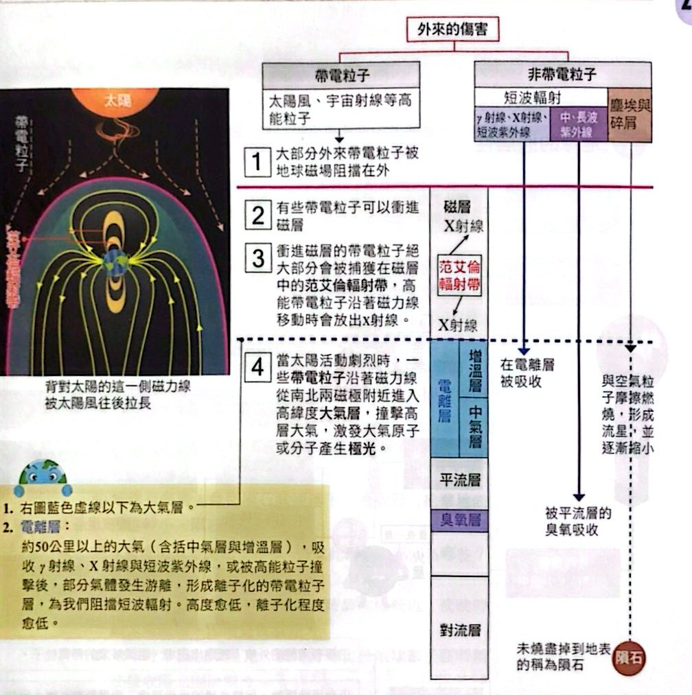
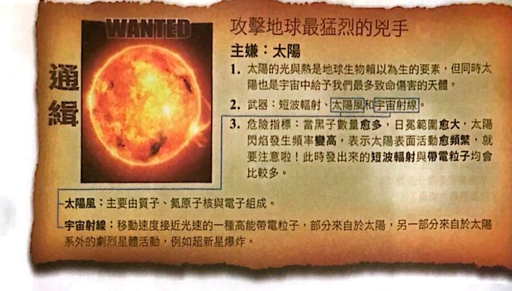
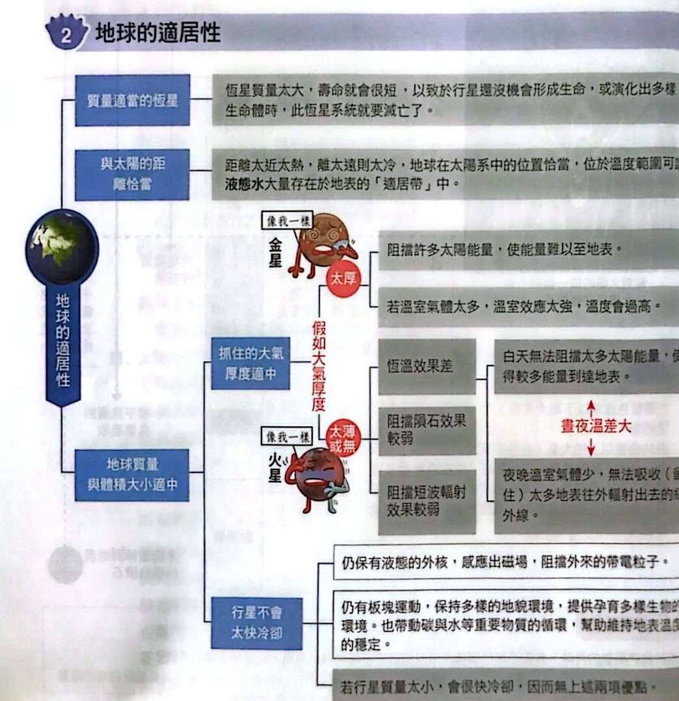

地球的防護罩

外來傷害與地球防護罩（講義 p.31）

攻擊地球最猛烈的兇手：太陽（講義 p.32）
地球的適居性

地球適居性的條件（講義 p.32）
小試身手
看答案與詳解收起
答磁層和大氣層
解這題在考什麼：帶電粒子由磁層阻擋；γ 射線、X 射線、紫外線等非帶電的短波輻射由大氣層（電離層吸收短波、臭氧層吸收紫外線）阻擋。所以答案是磁層與大氣層。
看答案與詳解收起
答(C)(D)；(F)
解這題在考什麼：極光是太陽的帶電粒子沿磁力線進入高緯度大氣層，撞擊高層大氣所產生。太陽活動劇烈時，極光機率大增。
- (A) ✗ 彗星近日點與極光無關。
- (B) ✗ 日冕範圍較小 ⇒ 太陽活動不劇烈。
- (C) ○ 黑子數目多 ⇒ 太陽活動頻繁。
- (D) ○ 閃焰強度高 ⇒ 噴出的帶電粒子多。
- 極光發生在哪一層？(F) 大氣層（帶電粒子撞擊的是高層大氣，不是磁層）。
看答案與詳解收起
答(A)(C)
解這題在考什麼：大氣層的阻擋隕石功能。火星大氣稀薄（約地球的 1%），隕石很少在大氣中燃燒耗損。
- (A) ○ 火星大氣稀薄，流星體與大氣摩擦生熱少，流星雨黯淡許多。
- (B) ✗ 與 (A) 相反。
- (C) ○ 地球大氣密度較大，隕石通過大氣層時摩擦燃燒損失較多質量，造成的隕石坑直徑較小。
- (D) ✗ 通過大氣層的時間長短與坑的大小無關；重力場較大不是主要原因。
- (E) ✗ 磁場阻擋的是帶電粒子，不會使隕石減速。
看答案與詳解收起
答(D)(E)
解這題在考什麼：月球沒有大氣（恆溫效果差）＋自轉慢（白天、夜晚都很長）。
- (A) ✗ 月球繞地球公轉的距離變化，不影響離太陽的距離（與太陽距離幾乎不變）。
- (B) ✗ 月食是偶爾發生的現象，不是日常溫差的原因。
- (C) ✗ 月球幾乎沒有大氣 ⇒ 幾乎沒有溫室氣體產生的溫室效應，日半球與夜半球都一樣沒有。
- (D) ○ 月球表面沒有大氣，恆溫效果差。
- (E) ○ 月球自轉慢（約 27 天一圈），白天與夜晚時間都很長：吸熱時間長 ⇒ 白天很熱；放熱時間長 ⇒ 夜晚很冷。
看答案與詳解收起
答(B)；(D)
解這題在考什麼：高能帶電粒子沿著磁力線移動時，會放出 X 射線；X 射線進入大氣後被電離層吸收（電離層約 50 公里以上，含中氣層與增溫層）。
- 放出的電磁波：(B) X 射線（宇宙射線是粒子，不是電磁波；可見光不是主要）。
- 被哪一層吸收：(D) 電離層（臭氧層吸收的是紫外線，在平流層）。
看答案與詳解收起
答(C) 火星比水星亮
解這題在考什麼：天空是亮是暗取決於有沒有大氣散射陽光。月球沒有大氣，白天天空是黑的。
- 地球：大氣濃 ⇒ 白天天空最亮。
- 火星：大氣稀薄但有一點 ⇒ 天空較暗（略亮）。
- 水星：幾乎沒有大氣 ⇒ 天空是黑的（最暗）。
- 亮暗：地球 ＞ 火星 ＞ 水星，所以選 (C) 火星比水星亮。
看答案與詳解收起
答(B)(C)(D)
解這題在考什麼：適居帶、金星大氣與磁場的觀念。
- (A) ○ 金星是離地球最近的行星，體積與質量比地球略小一些。
- (B) ✗ 適居帶是使液態水（不是氣態水）大量存在於行星表面的距離範圍。
- (C) ✗ 太陽光度增加，適居帶的範圍會逐漸往外移動，不是往內。
- (D) ✗ 阻擋太陽短波輻射（X 射線、短波紫外線）的是大氣層（電離層、臭氧層）；磁場阻擋的是帶電粒子，兩者不同。
- (E) ○ 金星大氣壓力大、CO₂ 占比高，溫室效應強。